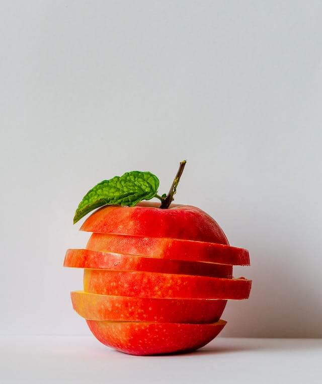
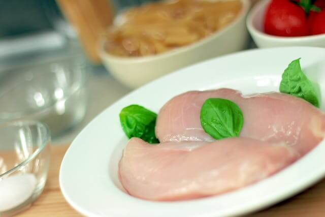
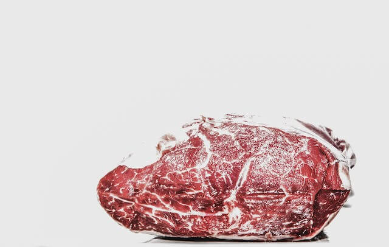
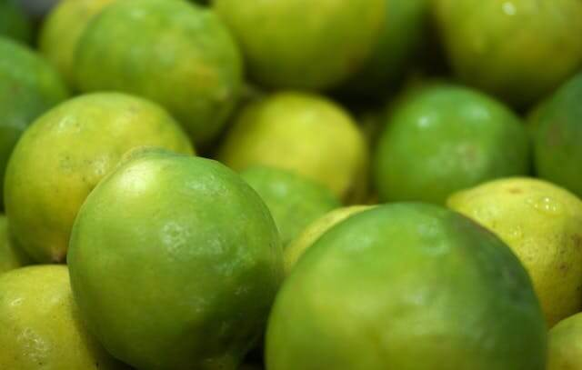
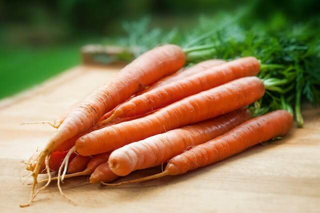

Lista del supermercado
- Frutas
- Manzana

Manzana cortada en trozos
- Banano
Banano a medio pelar
- Carnes
- Pollo

Pollo con especias
- Carne

Corte de carne
- Verduras
- Limon

Muchos limones
- Zanahoria

Zanahorias para picar
Creado por Luis Miguel Silva